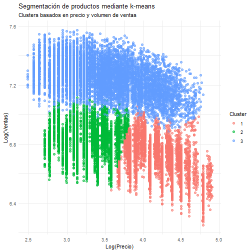

Segmentación del catálogo para identificar perfiles de producto
En esta fase se aplica una técnica de análisis de conglomerados para segmentar los productos del catálogo en grupos homogéneos según su comportamiento comercial. El objetivo es descubrir perfiles de producto con características similares que permitan diseñar estrategias diferenciadas de pricing, promoción y gestión del surtido.
Resumen de la fase
Análisis de Conglomerados
Segmentación del catálogo para identificar perfiles de producto con comportamientos similares.
Objetivo del análisis
Por qué segmentar el catálogo
El objetivo del análisis de conglomerados es segmentar los productos del catálogo en grupos homogéneos según su comportamiento comercial y características clave.
A diferencia de los modelos anteriores, el clustering no busca explicar ni predecir una variable concreta, sino descubrir patrones y perfiles de producto que ayuden a:
Selección de variables
Trabajo previo a la segmentación
Para la segmentación se seleccionan únicamente variables numéricas relevantes, limitando el análisis a un máximo de cinco variables, tal y como se recomienda.
Las variables elegidas son:
Estas variables capturan tanto el posicionamiento del producto (precio) como su desempeño comercial (ventas) y la intensidad de la acción comercial (promoción).
Previamente al clustering, se aplican transformaciones logarítmicas y una estandarización para evitar que las escalas distorsionen la formación de los grupos.
Preparación de los datos
Transformaciones y normalización
La estandarización garantiza que todas las variables contribuyan de forma equilibrada al proceso de segmentación.
Técnica de segmentación
Algoritmo k-means
Se utiliza el algoritmo k-means, una de las técnicas de clustering más habituales vistas en clase, por su sencillez e interpretabilidad.
Tras evaluar distintas soluciones, se opta por una segmentación en 3 clusters, lo que permite una lectura clara desde el punto de vista del negocio.
## Error in df$cluster <- as.factor(kmeans_model$cluster): object of type 'closure' is not subsettable

El gráfico muestra una clara diferenciación entre los tres clusters identificados. Se observa cómo los productos se agrupan según su nivel de precio y volumen de ventas, lo que refuerza la validez de la segmentación obtenida mediante el algoritmo k-means.
Interpretación de los clusters
Perfiles de producto
El análisis permite identificar tres perfiles claros de producto:
Esta segmentación ayuda a entender que no todos los productos deben gestionarse de la misma forma.
Conclusiones de negocio
Uso estratégico de la segmentación
El análisis de conglomerados proporciona una visión clara y accionable del catálogo:
En conjunto, la segmentación permite diseñar estrategias comerciales diferenciadas, alineadas con el comportamiento real de los productos.